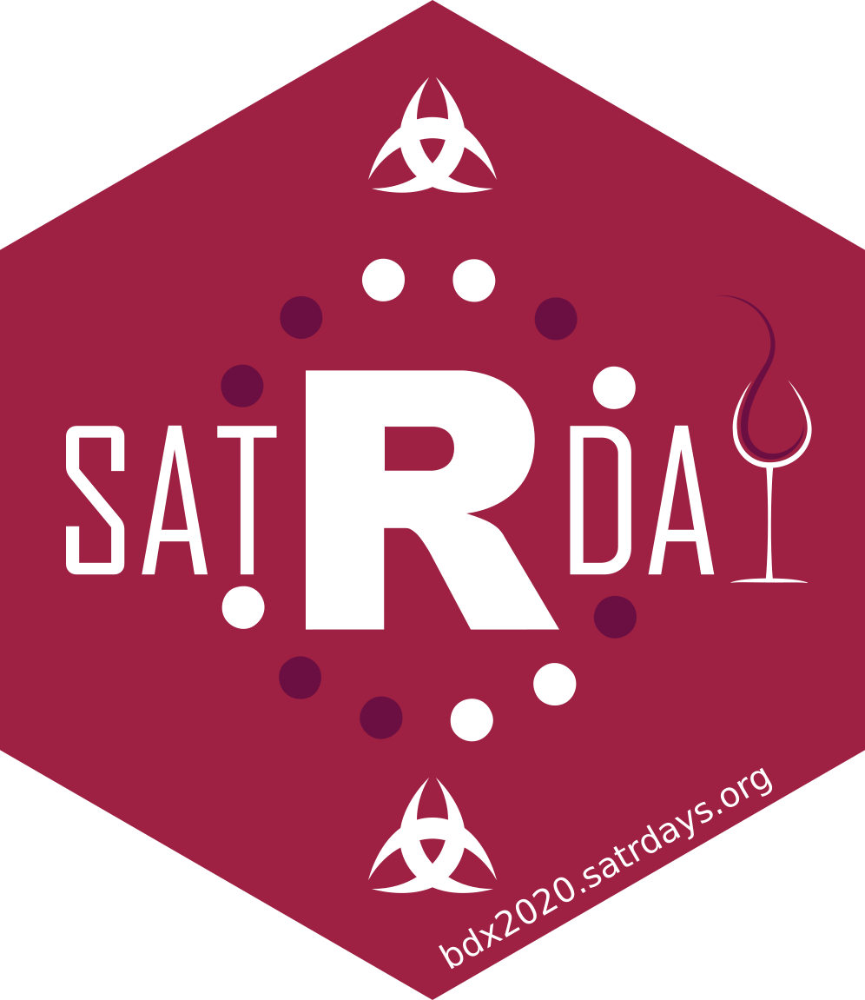
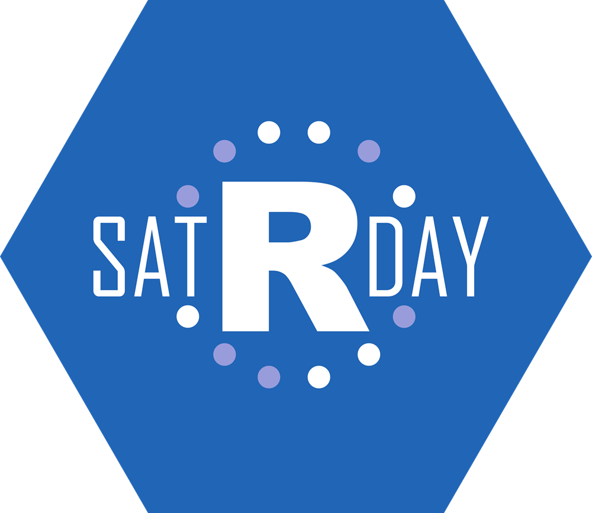
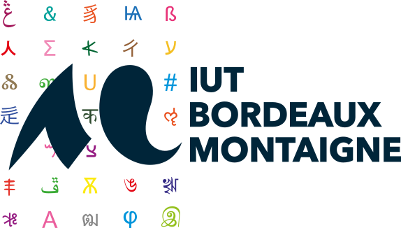
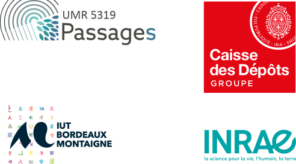

class: center, middle, inverse, title-slide # </br></br>satRday ## Bordeaux ### 16 Mai 2020 --- class: slide ## satRday - À propos .pull-left[ </br> </br> </br> </img> ] .pull-right[ + SatRday est un __événement international__ lancé en 2016. + SatRday a été sponsorisé par le __RConsortium__, projet open source de la fondation Linux visant à soutenir la communauté R internationale. + Projet (relativement) récent : l'objectif, à terme, étant d'organiser un événement par continent par trimestre. + Chaque événement amène entre 100 et 250 participants. + En lien avec la communauté locale. ] --- class: slidish ## À propos de R satRday est une conférence centrée sur R, __langage open source de référence__ dans le secteur de la Data Science. .pull-left[ </br> </br> <img src ="img/rlogo.png" width = "90%"></img> ] .pull-right[ + R est __open source__ : libre et gratuit + R est __référant__ : utilisé par les __universitaires__, __chercheurs__, et __industriels__. + R a fait ses preuves : il a soufflé ses __25 bougies__ en 2019 + R est utilisé dans le __monde public__ et __académique__ : INSEE, ETALAB, DREAL, Universités, CNRS... mais aussi __privé__ : Airbnb, BBC, Booking, Ebay, Facebook, Google, Microsoft, Netflix, Twitter, Uber... ] --- class: slidish ## À propos de R R est aujourd'hui la __lingua franca de la Data Science__, et est devenu un langage de programmation dont la maitrise est un véritable atout professionnel, et ce quel que soit le secteur d'expertise. __On retrouve des utilisateurs de R partout__ : dans la recherche, le privé, avec l'énergie, la finance, la banque, l'industrie pharmaceutique, le marketing, le commerce en ligne, comme dans le public, où R est notamment utilisé par l'INSEE, mais plus largement dans l'ensemble des services de la sphère publique. --- class: slide ## La philosophie satRday #### Ouvert, et Open source L'organisation d'un satRday est ouverte à tous, à condition de respecter ces prérequis : + L'événément est organisé un __samedi__. + L'événement doit suivre le __[Code de Conduite](https://knowledgebase.satrdays.org/diversity/)__, et l'équipe doit s'engager pour la __diversité__ et __l'inclusion__ des intervenants et du public. + Le prix du ticket pour une personne de l'industrie ne doit pas dépasser 8 heures du salaire minimum local. + Une partie des tickets doit être gratuite, __réservée aux participants ne pouvant pas s'offrir le billet__ (étudiants, professionnels en reconversion, personnes en recherche d'emploi, etc.). + Les intervenants ne paient pas le billet. + L'événement est organisé par des __bénévoles__. + Les __bénéfices__ (s'il y en a) seront utilisés pour __animer la communauté locale__ : meetup, organisation d'un workshop, ateliers... --- class: slide ## Pourquoi sponsoriser satRday ? Quelques bonnes raisons de sponsoriser un satRday : + SatRday est organisé par des __bénévoles__ : en sponsorisant l'événement, vous montrez votre soutien à la communauté R/Open source locale. + satRday est "non-profit" : les sponsorings et bénéfices (s'il y en a) seront __réinvestis dans des événements pour la communauté__. + satRday est "low-cost" voire gratuit : nous souhaitons __rendre cet événement gratuit ou à défaut fixer le prix d'entrée à un tarif le plus bas possible__. C'est grâce à nos sponsors que nous pouvons agir sur ce point. + satRday est "à la pointe" : cette conférence a pour objectif d'inviter des "keynote speakers" __référents dans leur domaine d'expertise__. + satRday est "pour tous" : le progamme est préparé pour convenir __aux débutants et aux utilisateurs avancés__, mais aussi aux curieux. + satRday est inclusif : en sponsorisant cet événement, vous __participez à l'effort d'inclusion des minorités dans le secteur de la tech/data science__. --- class: slide ## Comment sponsoriser satRday ? Comment pouvez-vous aider satRday ? <!-- + __Sponsoring Accueil__ : vous pouvez mettre à disposition de l'événement des locaux.--> + __Sponsoring Lunch__ : vous souhaitez financer le repas du midi + __Sponsoring Coffee Break__ : vous financez un ou deux coffee break. + __Sponsoring Logistique__ : vous soutenez la logistique de l'événement (aide sur place à l'installation et à l'organisation globale de la journée). + __Sponsoring Communication__ : vous sponsorisez pour l'impression d'affiches, de flyers, de plaquettes, la mise en ligne du site et l'animation des réseaux sociaux. + __Sponsoring Goodies__ : vous sponsorisez la création de Goodies pour l'événement : t-shirts, stickers... + __Sponsoring financier__ : vous sponsorisez l'événement de manière classique. --- class: slide ## Contreparties du sponsoring Selon votre plafond de sponsoring, vous aurez notamment, en contrepartie : + La visibilité sur le __site web__ et le __compte Twitter__ de satRday. + Votre __logo__ sur l'affiche, les flyers et le programme. + Votre __logo__ sur les slides d'ouverture, de break, et de fermeture de la conférence. + Un __stand__, sur place, pendant les pauses. + La possibilité d'amener un __kakémono__. --- class: slide ## Bordeaux 2020 ### Agenda Le satRday est un événement international, qui demande une coordination entre les différents pays, afin de ventiler ces journées de manière intelligente. L'itération Bordelaise de l'événement se tiendra le __16 mai 2020__ avant la conférence européenne et les rencontres nationale. ### Lieu L'événement sera accueilli par l'IUT Carrières sociales, de l'université Bordeaux Montaigne, 1 Rue Jacques Ellul 33800 Bordeaux, dans le quartier Sainte-Croix à deux pas de la gare Saint-Jean. <div align = "center">  </div> --- class: slide ## Bordeaux 2020 ## Speakers Confirmés + __Victor Perrier__, Data Scientist chez __DreamR__, France. + __Françoise Bahoken__, Géographe et cartographe, Chargée de recherches, __IFFSTAR__, FRANCE. + __Nicolas Lambert__, Ingénieur de recherche en sciences de l'information, __CNRS__, FRANCE. + __Fanny Meyer__, Data Scientist chez __DreamR__, France. + __Colin Fay__, Data Scientist chez __ThinkR__, France. + __Marion Louveaux__, chercheuse en agronomie à __Université d’Heidelberg__, ALLEMAGNE. + __Maël Theulière__, Chef de la division Observation, études et Statistiques à la __DREAL pays de la Loire__, France <!-- classe: slide --> <!-- ## Paris 2019 - Budget prévisionnel --> <!-- #### Lieu --> <!-- + Nous espérons trouver un lieu pouvant nous sponsoriser en nous accueillant --> <!-- #### Speakers --> <!-- + Invitations de speakers internationaux : --> <!-- + 4 Europe : 750€ chaque, soit 3000€ --> <!-- #### Frais de bouche --> <!-- + Repas & Pause pour 150 personnes --> <!-- + 15€ par personne, soit 2250€ --> <!-- #### Communication --> <!-- + Flyers, stickers, communication web --> <!-- + 1500€ --> <!-- --- --> <!-- classe: slide --> <!-- ## Paris 2019 - Budget prévisionnel --> <!-- ### Sponsoring --> <!-- Revenus estimés : 6000 € --> <!-- ### Places --> <!-- Nous espérons __couvrir l'ensemble des coûts grâce au sponsoring__, ce qui nous permettra de __rendre l'événement gratuit.__ --> --- class: slide ## L'équipe ### Membres organisateurs + __Grégoire Le Campion__, Ingénieur d'études statisticien au sein de l'UMR Passages, Bordeaux, CNRS. + __Marylène Henri__, Statisticienne à la Caisse des dépôts et consignations, Bordeaux. + __David Carrayon__, Satisticien à l'INRAE, Bordeaux. + __Sandrine Lyser__, Satisticienne à l'INRAE, Bordeaux. + __Colin Fay__, Data Scientist & R Hacker @ ThinkR, membre actif de la communauté R francophone. <!--#### Association porteuse de projet L'association loi 1901 __Lab School Paris__ apporte son soutien logistique pour porter le projet.--> --- classe: slide ## Bordeaux 2020 ### L'équipe organisatrice SatRday Bordeaux 2020 est aussi porté par "gRrr", __collectif pour le développement de R dans la communauté Francophone__. Organisé notamment sur une Slack (plateforme d'échange en ligne), gRrr compte aujourd'hui 300 membres. Parmi ces membres, on retrouve : + des __étudiants et doctorants__ : INSA, SciencePo, INRA, UGA... + des professionnels du __secteur public__ : INSEE, Etalab, SDES, DREES, DREAL, Ministère de la Justice, Pôle Emploi... + des professionnels du __secteur privé __: RTE, EDF, ThinkR, Locke Data, Datactivist, DreameRs, Ardata, Datapole, iAdvize, freelances... + des __ONG__ : rOpenSci... + des __chercheurs__ : CNRS, IRSN, LPNC... De __toute la France__ : Paris, Rennes, Toulouse, Marseille, Bordeaux, Grenoble... ... et __d'ailleurs__ : Togo, Sénégal, Suède, Danemark... --- class: slidish ## Bordeaux 2020 ### Premiers sponsors <div align = "center">  </div> --- class: slidish ## satRday - Timeline .pull-left[ ### 2018 + Cape Town + Amsterdam + Washington ### 2019 + Paris + Berlin + Los Angeles ### et 2020... + Neuchâtel + Johannesburg + et __Bordeaux__ ] .pull-right[ </br> </br> <img src="sponso_satRday_bdx_files/figure-html/unnamed-chunk-1-1.png" alt=""> <!-- --> ] --- class: slide ## En savoir plus ### satRday + satRday : https://satrdays.org/ + Knowledge Base : https://knowledgebase.satrdays.org/ ## R Consortium + RConsortium : https://www.r-consortium.org/ ## R + À propos de R : https://www.r-project.org/ + Usage de R en entreprise : https://github.com/ThinkR-open/companies-using-r --- class: slide background-image: url(img/photogrid_4-3.jpg) --- class: contact </br> </br> </br> </br> </br> # Contact ## Grégoire Le Campion / Marylène Henri ### satrdaybdx@gmail.com / gregoire.lecampion@cnrs.fr ### 06.77.16.47.60